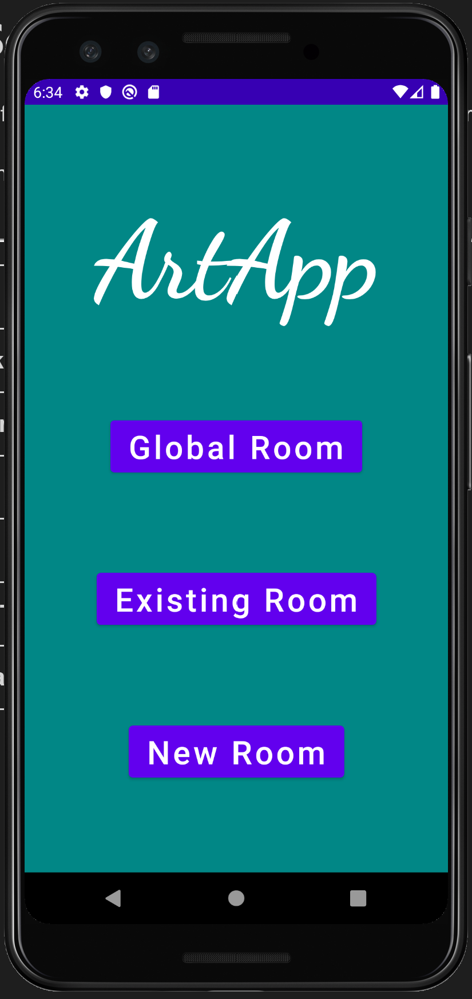
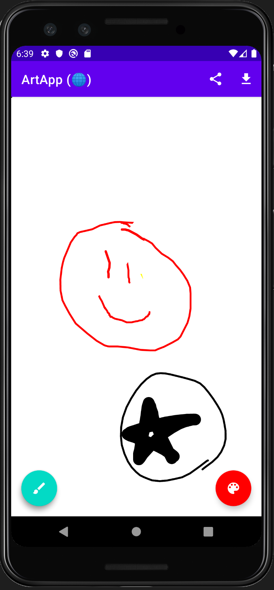
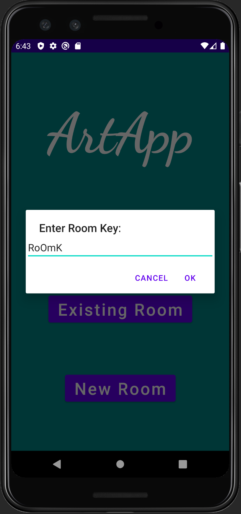
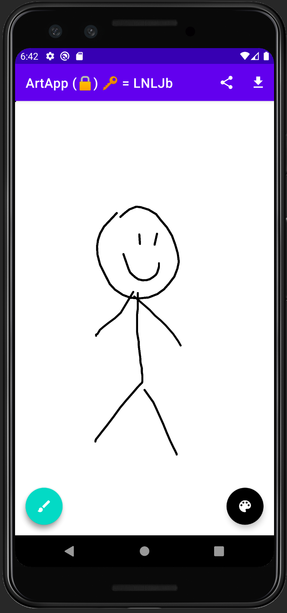

An Android application for collaborative art. This project is the
semester project for CMSC436, UMD, Fall 2020.
Team: Ophir Gal, Cheyenne Montgomery, and Derek Aborde.
Group number: 45.
| Icon | App name: ArtApp |
| External link to .apk | |
|
External link to source zip
https://github.com/Ophir-Gal/artapp/archive/main.zip |
|
| App Description
ArtApp is a collaborative drawing app which allows users to draw on their screen while simultaneously seeing the drawings of others. ArtApp features a global room along with private rooms. |
|
| Screenshot 1 (main menu)  |
Screenshot 2 (global room)  |
| Screenshot 3 (room key dialogue)  |
Screenshot 4 (private room)  |
| External link to YouTube video | |
List of external libraries and code used in this project
|
|